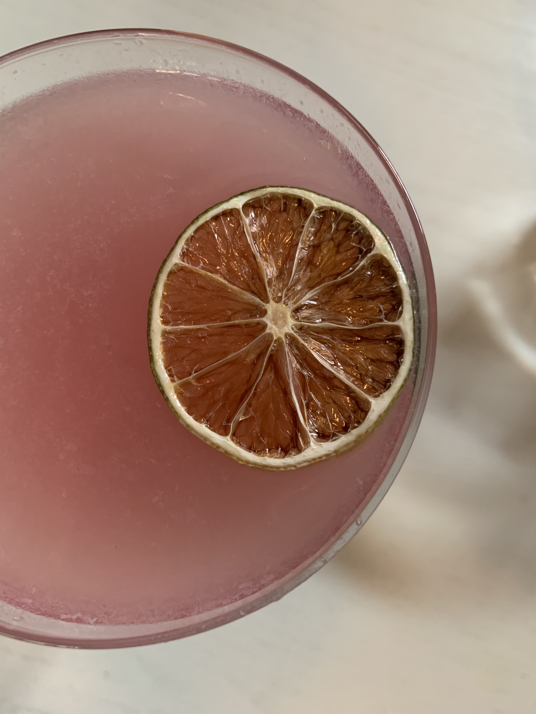
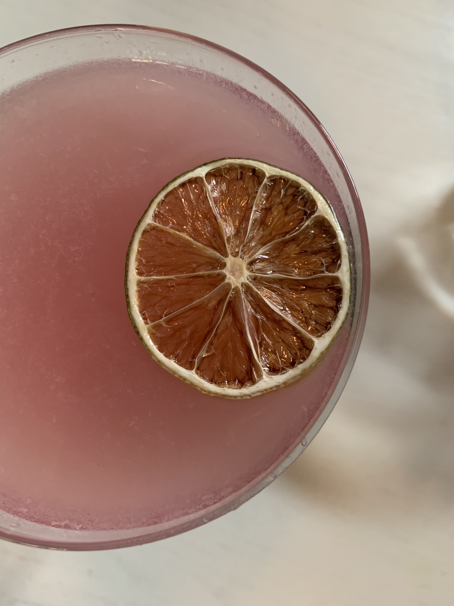
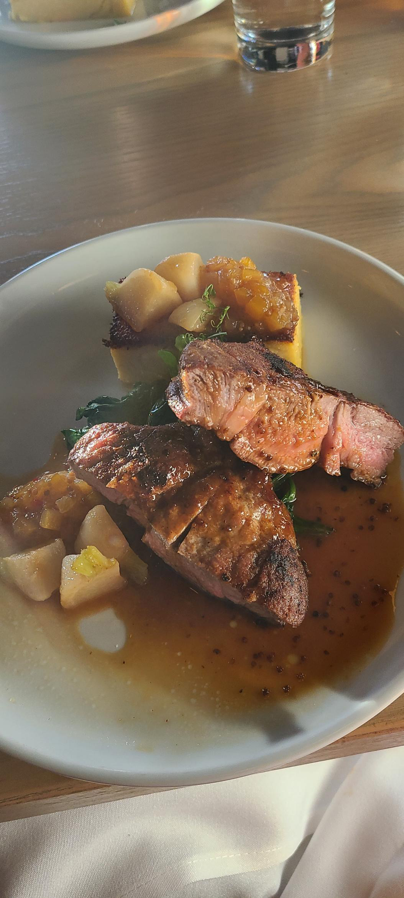
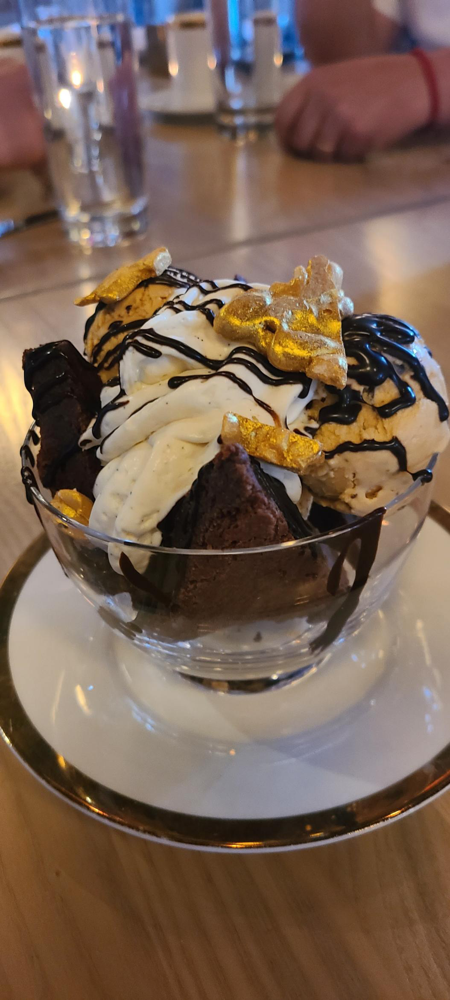
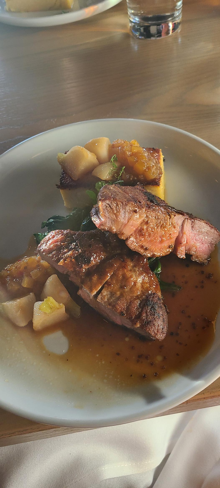
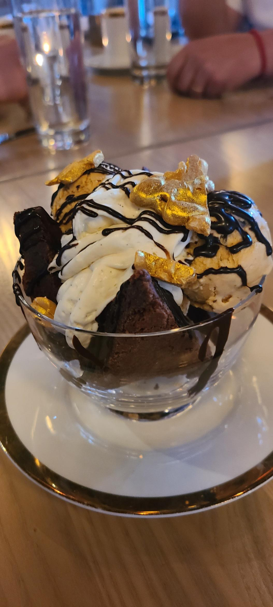
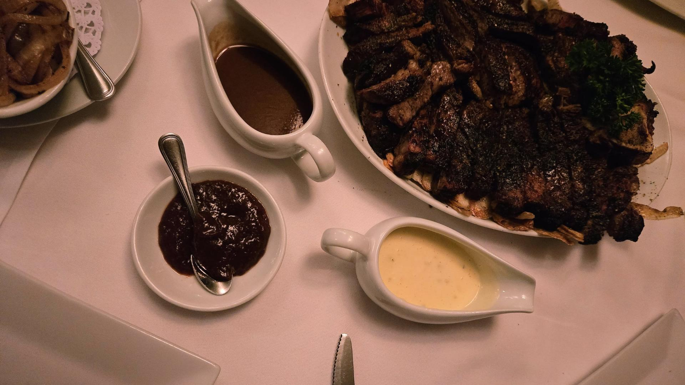
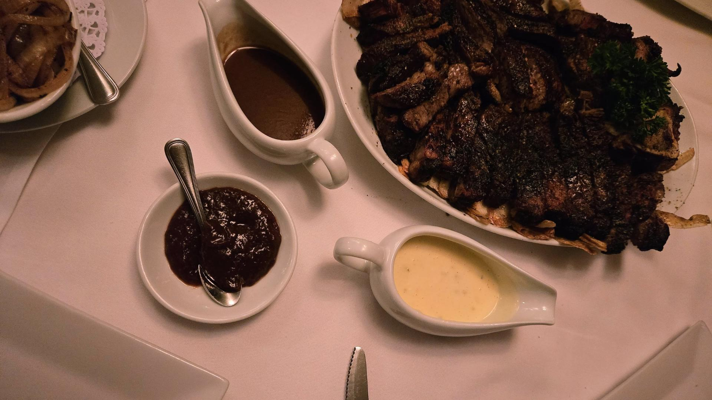
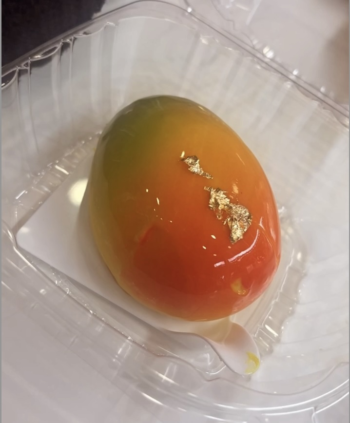
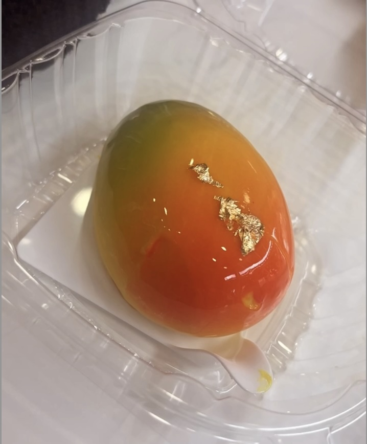

New York City is a melting pot of cultures, and its food scene reflects that diversity. Each borough offers a unique culinary experience. NYC's food scene is a delicious journey that invites you to explore and savor the tastes of the world without leaving the city..
 



 



 



 
